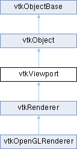

|
Etrek
|
|
Etrek
|
abstract specification for Viewports More...
#include <vtkViewport.h>

Public Types | |
| enum class | GradientModes : int { VTK_GRADIENT_VERTICAL , VTK_GRADIENT_HORIZONTAL , VTK_GRADIENT_RADIAL_VIEWPORT_FARTHEST_SIDE , VTK_GRADIENT_RADIAL_VIEWPORT_FARTHEST_CORNER } |
Public Member Functions | |
| vtkTypeMacro (vtkViewport, vtkObject) | |
| void | PrintSelf (ostream &os, vtkIndent indent) override |
| void | AddViewProp (vtkProp *) |
| vtkPropCollection * | GetViewProps () |
| vtkTypeBool | HasViewProp (vtkProp *) |
| void | RemoveViewProp (vtkProp *) |
| void | RemoveAllViewProps () |
| virtual double * | GetCenter () VTK_SIZEHINT(2) |
| virtual vtkTypeBool | IsInViewport (int x, int y) |
| virtual vtkWindow * | GetVTKWindow ()=0 |
| virtual void | DisplayToView () |
| virtual void | ViewToDisplay () |
| virtual void | WorldToView () |
| virtual void | ViewToWorld () |
| void | DisplayToWorld () |
| void | WorldToDisplay () |
| void | WorldToDisplay (double &x, double &y, double &z) |
| virtual vtkAssemblyPath * | PickProp (double selectionX, double selectionY)=0 |
| virtual vtkAssemblyPath * | PickProp (double selectionX1, double selectionY1, double selectionX2, double selectionY2)=0 |
| vtkAssemblyPath * | PickPropFrom (double selectionX, double selectionY, vtkPropCollection *) |
| vtkAssemblyPath * | PickPropFrom (double selectionX1, double selectionY1, double selectionX2, double selectionY2, vtkPropCollection *) |
| virtual vtkAssemblyPath * | PickProp (double selectionX, double selectionY, int fieldAssociation, vtkSmartPointer< vtkSelection > selection)=0 |
| virtual vtkAssemblyPath * | PickProp (double selectionX1, double selectionY1, double selectionX2, double selectionY2, int fieldAssociation, vtkSmartPointer< vtkSelection > selection)=0 |
| vtkAssemblyPath * | PickPropFrom (double selectionX, double selectionY, vtkPropCollection *, int fieldAssociation, vtkSmartPointer< vtkSelection > selection) |
| vtkAssemblyPath * | PickPropFrom (double selectionX1, double selectionY1, double selectionX2, double selectionY2, vtkPropCollection *, int fieldAssociation, vtkSmartPointer< vtkSelection > selection) |
| virtual double | GetPickedZ () |
| void | AddActor2D (vtkProp *p) |
| void | RemoveActor2D (vtkProp *p) |
| vtkActor2DCollection * | GetActors2D () |
| vtkSetVector3Macro (Background, double) | |
| vtkGetVector3Macro (Background, double) | |
| vtkSetVector3Macro (Background2, double) | |
| vtkGetVector3Macro (Background2, double) | |
| vtkSetClampMacro (BackgroundAlpha, double, 0.0, 1.0) | |
| vtkGetMacro (BackgroundAlpha, double) | |
| vtkSetMacro (GradientBackground, bool) | |
| vtkGetMacro (GradientBackground, bool) | |
| vtkBooleanMacro (GradientBackground, bool) | |
| vtkSetMacro (DitherGradient, bool) | |
| vtkGetMacro (DitherGradient, bool) | |
| vtkBooleanMacro (DitherGradient, bool) | |
| vtkSetEnumMacro (GradientMode, GradientModes) | |
| vtkGetEnumMacro (GradientMode, GradientModes) | |
| vtkSetVector2Macro (Aspect, double) | |
| vtkGetVectorMacro (Aspect, double, 2) | |
| virtual void | ComputeAspect () |
| vtkSetVector2Macro (PixelAspect, double) | |
| vtkGetVectorMacro (PixelAspect, double, 2) | |
| vtkSetVector4Macro (Viewport, double) | |
| vtkGetVectorMacro (Viewport, double, 4) | |
| vtkSetVector3Macro (DisplayPoint, double) | |
| vtkGetVectorMacro (DisplayPoint, double, 3) | |
| vtkSetVector3Macro (ViewPoint, double) | |
| vtkGetVectorMacro (ViewPoint, double, 3) | |
| vtkSetVector4Macro (WorldPoint, double) | |
| vtkGetVectorMacro (WorldPoint, double, 4) | |
| virtual void | LocalDisplayToDisplay (double &x, double &y) |
| virtual void | DisplayToNormalizedDisplay (double &u, double &v) |
| virtual void | NormalizedDisplayToViewport (double &x, double &y) |
| virtual void | ViewportToNormalizedViewport (double &u, double &v) |
| virtual void | NormalizedViewportToView (double &x, double &y, double &z) |
| virtual void | ViewToPose (double &, double &, double &) |
| virtual void | PoseToWorld (double &, double &, double &) |
| virtual void | DisplayToLocalDisplay (double &x, double &y) |
| virtual void | NormalizedDisplayToDisplay (double &u, double &v) |
| virtual void | ViewportToNormalizedDisplay (double &x, double &y) |
| virtual void | NormalizedViewportToViewport (double &u, double &v) |
| virtual void | ViewToNormalizedViewport (double &x, double &y, double &z) |
| virtual void | PoseToView (double &, double &, double &) |
| virtual void | WorldToPose (double &, double &, double &) |
| virtual void | ViewToWorld (double &, double &, double &) |
| virtual void | WorldToView (double &, double &, double &) |
| virtual void | ViewToDisplay (double &x, double &y, double &z) |
| virtual int * | GetSize () VTK_SIZEHINT(2) |
| virtual int * | GetOrigin () VTK_SIZEHINT(2) |
| void | GetTiledSize (int *width, int *height) |
| virtual void | GetTiledSizeAndOrigin (int *width, int *height, int *lowerLeftX, int *lowerLeftY) |
| double | GetPickX () const |
| double | GetPickY () const |
| double | GetPickWidth () const |
| double | GetPickHeight () const |
| double | GetPickX1 () const |
| double | GetPickY1 () const |
| double | GetPickX2 () const |
| double | GetPickY2 () const |
| vtkGetObjectMacro (PickResultProps, vtkPropCollection) | |
| vtkSetVector3Macro (EnvironmentalBG, double) | |
| vtkGetVector3Macro (EnvironmentalBG, double) | |
| vtkSetVector3Macro (EnvironmentalBG2, double) | |
| vtkGetVector3Macro (EnvironmentalBG2, double) | |
| vtkSetMacro (GradientEnvironmentalBG, bool) | |
| vtkGetMacro (GradientEnvironmentalBG, bool) | |
| vtkBooleanMacro (GradientEnvironmentalBG, bool) | |
| Public Member Functions inherited from vtkObject | |
| vtkBaseTypeMacro (vtkObject, vtkObjectBase) | |
| virtual void | DebugOn () |
| virtual void | DebugOff () |
| bool | GetDebug () |
| void | SetDebug (bool debugFlag) |
| virtual void | Modified () |
| virtual vtkMTimeType | GetMTime () |
| void | RemoveObserver (unsigned long tag) |
| void | RemoveObservers (unsigned long event) |
| void | RemoveObservers (const char *event) |
| void | RemoveAllObservers () |
| vtkTypeBool | HasObserver (unsigned long event) |
| vtkTypeBool | HasObserver (const char *event) |
| vtkTypeBool | InvokeEvent (unsigned long event) |
| vtkTypeBool | InvokeEvent (const char *event) |
| std::string | GetObjectDescription () const override |
| unsigned long | AddObserver (unsigned long event, vtkCommand *, float priority=0.0f) |
| unsigned long | AddObserver (const char *event, vtkCommand *, float priority=0.0f) |
| vtkCommand * | GetCommand (unsigned long tag) |
| void | RemoveObserver (vtkCommand *) |
| void | RemoveObservers (unsigned long event, vtkCommand *) |
| void | RemoveObservers (const char *event, vtkCommand *) |
| vtkTypeBool | HasObserver (unsigned long event, vtkCommand *) |
| vtkTypeBool | HasObserver (const char *event, vtkCommand *) |
| template<class U, class T> | |
| unsigned long | AddObserver (unsigned long event, U observer, void(T::*callback)(), float priority=0.0f) |
| template<class U, class T> | |
| unsigned long | AddObserver (unsigned long event, U observer, void(T::*callback)(vtkObject *, unsigned long, void *), float priority=0.0f) |
| template<class U, class T> | |
| unsigned long | AddObserver (unsigned long event, U observer, bool(T::*callback)(vtkObject *, unsigned long, void *), float priority=0.0f) |
| vtkTypeBool | InvokeEvent (unsigned long event, void *callData) |
| vtkTypeBool | InvokeEvent (const char *event, void *callData) |
| virtual void | SetObjectName (const std::string &objectName) |
| virtual std::string | GetObjectName () const |
| Public Member Functions inherited from vtkObjectBase | |
| const char * | GetClassName () const |
| virtual vtkTypeBool | IsA (const char *name) |
| virtual vtkIdType | GetNumberOfGenerationsFromBase (const char *name) |
| virtual void | Delete () |
| virtual void | FastDelete () |
| void | InitializeObjectBase () |
| void | Print (ostream &os) |
| void | Register (vtkObjectBase *o) |
| virtual void | UnRegister (vtkObjectBase *o) |
| int | GetReferenceCount () |
| void | SetReferenceCount (int) |
| bool | GetIsInMemkind () const |
| virtual void | PrintHeader (ostream &os, vtkIndent indent) |
| virtual void | PrintTrailer (ostream &os, vtkIndent indent) |
| virtual bool | UsesGarbageCollector () const |
Protected Attributes | |
| vtkAssemblyPath * | PickedProp |
| vtkPropCollection * | PickFromProps |
| vtkPropCollection * | PickResultProps |
| double | PickX1 |
| double | PickY1 |
| double | PickX2 |
| double | PickY2 |
| double | PickedZ |
| vtkPropCollection * | Props |
| vtkActor2DCollection * | Actors2D |
| vtkWindow * | VTKWindow |
| double | Background [3] |
| double | Background2 [3] |
| double | BackgroundAlpha |
| double | Viewport [4] |
| double | Aspect [2] |
| double | PixelAspect [2] |
| double | Center [2] |
| bool | GradientBackground |
| bool | DitherGradient |
| GradientModes | GradientMode = GradientModes::VTK_GRADIENT_VERTICAL |
| double | EnvironmentalBG [3] |
| double | EnvironmentalBG2 [3] |
| bool | GradientEnvironmentalBG |
| int | Size [2] |
| int | Origin [2] |
| double | DisplayPoint [3] |
| double | ViewPoint [3] |
| double | WorldPoint [4] |
| Protected Attributes inherited from vtkObject | |
| bool | Debug |
| vtkTimeStamp | MTime |
| vtkSubjectHelper * | SubjectHelper |
| std::string | ObjectName |
| Protected Attributes inherited from vtkObjectBase | |
| std::atomic< int32_t > | ReferenceCount |
| vtkWeakPointerBase ** | WeakPointers |
Additional Inherited Members | |
| Static Public Member Functions inherited from vtkObject | |
| static vtkObject * | New () |
| static void | BreakOnError () |
| static void | SetGlobalWarningDisplay (vtkTypeBool val) |
| static void | GlobalWarningDisplayOn () |
| static void | GlobalWarningDisplayOff () |
| static vtkTypeBool | GetGlobalWarningDisplay () |
| Static Public Member Functions inherited from vtkObjectBase | |
| static vtkTypeBool | IsTypeOf (const char *name) |
| static vtkIdType | GetNumberOfGenerationsFromBaseType (const char *name) |
| static vtkObjectBase * | New () |
| static void | SetMemkindDirectory (const char *directoryname) |
| static bool | GetUsingMemkind () |
| Protected Member Functions inherited from vtkObject | |
| void | RegisterInternal (vtkObjectBase *, vtkTypeBool check) override |
| void | UnRegisterInternal (vtkObjectBase *, vtkTypeBool check) override |
| void | InternalGrabFocus (vtkCommand *mouseEvents, vtkCommand *keypressEvents=nullptr) |
| void | InternalReleaseFocus () |
| Protected Member Functions inherited from vtkObjectBase | |
| virtual void | ReportReferences (vtkGarbageCollector *) |
| vtkObjectBase (const vtkObjectBase &) | |
| void | operator= (const vtkObjectBase &) |
| Static Protected Member Functions inherited from vtkObjectBase | |
| static vtkMallocingFunction | GetCurrentMallocFunction () |
| static vtkReallocingFunction | GetCurrentReallocFunction () |
| static vtkFreeingFunction | GetCurrentFreeFunction () |
| static vtkFreeingFunction | GetAlternateFreeFunction () |
abstract specification for Viewports
vtkViewport provides an abstract specification for Viewports. A Viewport is an object that controls the rendering process for objects. Rendering is the process of converting geometry, a specification for lights, and a camera view into an image. vtkViewport also performs coordinate transformation between world coordinates, view coordinates (the computer graphics rendering coordinate system), and display coordinates (the actual screen coordinates on the display device). Certain advanced rendering features such as two-sided lighting can also be controlled.
| void vtkViewport::AddActor2D | ( | vtkProp * | p | ) |
Add the given prop to the renderer. This is a synonym for AddViewProp.
| void vtkViewport::AddViewProp | ( | vtkProp * | ) |
Add a prop to the list of props. Does nothing if the prop is nullptr or already present. Prop is the superclass of all actors, volumes, 2D actors, composite props etc.
|
virtual |
Convert display coordinates to view coordinates.
|
inline |
Convert display (or screen) coordinates to world coordinates.
| vtkActor2DCollection * vtkViewport::GetActors2D | ( | ) |
Loops through the props and returns a collection of those that are vtkActor2D (or one of its subclasses).
|
virtual |
Return the center of this viewport in display coordinates.
|
inlinevirtual |
Return the Z value for the last picked Prop.
|
inline |
Methods used to return the pick (x,y) in local display coordinates (i.e., it's that same as selectionX and selectionY).
|
virtual |
Get the size and origin of the viewport in display coordinates. Note: if the window has not yet been realized, GetSize() and GetOrigin() return (0,0).
|
inline |
Return any props in this viewport.
|
pure virtual |
Return the vtkWindow that owns this vtkViewport.
Implemented in vtkRenderer.
| vtkTypeBool vtkViewport::HasViewProp | ( | vtkProp * | ) |
Query if a prop is in the list of props. Returns false for nullptr.
|
virtual |
Is a given display point in this Viewport's viewport.
|
virtual |
These methods map from one coordinate system to another. They are primarily used by the vtkCoordinate object and are often strung together. These methods return valid information only if the window has been realized (e.g., GetSize() returns something other than (0,0)).
|
pure virtual |
Return the Prop that has the highest z value at the given x, y position in the viewport. Basically, the top most prop that renders the pixel at selectionX, selectionY will be returned. If no Props are there NULL is returned. This method selects from the Viewports Prop list.
Implemented in vtkRenderer.
|
pure virtual |
Return the Prop that has the highest z value at the given x, y position in the viewport. Basically, the top most prop that renders the pixel at selectionX, selectionY will be returned. If no Props are there, NULL is returned. This method selects from the Viewports Prop list. Additionally, you can set the field association of the hardware selector used internally, and get its selection result by passing a non-null vtkSmartPointer<vtkSelection>.
Implemented in vtkRenderer.
|
pure virtual |
Return the Prop that has the highest z value at the given x1, y1 and x2,y2 positions in the viewport. Basically, the top most prop that renders the pixel at selectionX1, selectionY1, selectionX2, selectionY2 will be returned. If no Props are there NULL is returned. This method selects from the Viewports Prop list.
Implemented in vtkRenderer.
|
pure virtual |
Return the Prop that has the highest z value at the given x1, y1 and x2,y2 positions in the viewport. Basically, the top most prop that renders the pixel at selectionX1, selectionY1, selectionX2, selectionY2 will be returned. If no Props are there, NULL is returned. This method selects from the Viewports Prop list. Additionally, you can set the field association of the hardware selector used internally, and get its selection result by passing a non-null vtkSmartPointer<vtkSelection>.
Implemented in vtkRenderer.
| vtkAssemblyPath * vtkViewport::PickPropFrom | ( | double | selectionX, |
| double | selectionY, | ||
| vtkPropCollection * | ) |
Same as PickProp with two arguments, but selects from the given collection of Props instead of the Renderers props. Make sure the Props in the collection are in this renderer.
| vtkAssemblyPath * vtkViewport::PickPropFrom | ( | double | selectionX, |
| double | selectionY, | ||
| vtkPropCollection * | , | ||
| int | fieldAssociation, | ||
| vtkSmartPointer< vtkSelection > | selection ) |
Same as PickProp with two arguments, but selects from the given collection of Props instead of the Renderers props. Make sure the Props in the collection are in this renderer. Additionally, you can set the field association of the hardware selector used internally, and get its selection result by passing a non-null vtkSmartPointer<vtkSelection>.
| vtkAssemblyPath * vtkViewport::PickPropFrom | ( | double | selectionX1, |
| double | selectionY1, | ||
| double | selectionX2, | ||
| double | selectionY2, | ||
| vtkPropCollection * | ) |
Same as PickProp with four arguments, but selects from the given collection of Props instead of the Renderers props. Make sure the Props in the collection are in this renderer.
| vtkAssemblyPath * vtkViewport::PickPropFrom | ( | double | selectionX1, |
| double | selectionY1, | ||
| double | selectionX2, | ||
| double | selectionY2, | ||
| vtkPropCollection * | , | ||
| int | fieldAssociation, | ||
| vtkSmartPointer< vtkSelection > | selection ) |
Same as PickProp with four arguments, but selects from the given collection of Props instead of the Renderers props. Make sure the Props in the collection are in this renderer. Additionally, you can set the field association of the hardware selector used internally, and get its selection result by passing a non-null vtkSmartPointer<vtkSelection>.
|
overridevirtual |
| void vtkViewport::RemoveActor2D | ( | vtkProp * | p | ) |
Remove the given prop from the renderer. This is a synonym for RemoveViewProp.
| void vtkViewport::RemoveAllViewProps | ( | ) |
Remove all props from the list of props.
| void vtkViewport::RemoveViewProp | ( | vtkProp * | ) |
Remove a prop from the list of props. Does nothing if the prop is nullptr or not already present.
|
virtual |
Convert view coordinates to display coordinates.
|
virtual |
Convert view point coordinates to world coordinates.
Reimplemented in vtkRenderer.
| vtkViewport::vtkSetClampMacro | ( | BackgroundAlpha | , |
| double | , | ||
| 0. | 0, | ||
| 1. | 0 ) |
Set/Get the alpha value used to fill the background with. By default, this is set to 0.0.
| vtkViewport::vtkSetEnumMacro | ( | GradientMode | , |
| GradientModes | ) |
Specify the direction of the gradient background. All modes smoothly interpolate the color from Background to Background2
| vtkViewport::vtkSetMacro | ( | DitherGradient | , |
| bool | ) |
Set/Get whether this viewport should use dithering to reduce color banding when using gradient backgrounds. By default, this feature is enabled.
| vtkViewport::vtkSetMacro | ( | GradientBackground | , |
| bool | ) |
Set/Get whether this viewport should have a gradient background using the Background (bottom) and Background2 (top) colors. Default is off.
| vtkViewport::vtkSetMacro | ( | GradientEnvironmentalBG | , |
| bool | ) |
Set/Get whether this viewport should enable the gradient environment using the EnvironmentalBG (bottom) and EnvironmentalBG2 (top) colors. Note this is currently ignored outside of RayTracing. Default is off.
| vtkViewport::vtkSetVector2Macro | ( | Aspect | , |
| double | ) |
Set the aspect ratio of the rendered image. This is computed automatically and should not be set by the user.
| vtkViewport::vtkSetVector2Macro | ( | PixelAspect | , |
| double | ) |
Set the aspect ratio of a pixel in the rendered image. This factor permits the image to rendered anisotropically (i.e., stretched in one direction or the other).
| vtkViewport::vtkSetVector3Macro | ( | Background | , |
| double | ) |
Set/Get the background color of the rendering screen using an rgb color specification.
| vtkViewport::vtkSetVector3Macro | ( | Background2 | , |
| double | ) |
Set/Get the second background color of the rendering screen for gradient backgrounds using an rgb color specification.
| vtkViewport::vtkSetVector3Macro | ( | DisplayPoint | , |
| double | ) |
Set/get a point location in display (or screen) coordinates. The lower left corner of the window is the origin and y increases as you go up the screen.
| vtkViewport::vtkSetVector3Macro | ( | EnvironmentalBG | , |
| double | ) |
Set/Get the constant environmental color using an rgb color specification. Note this is currently ignored outside of RayTracing.
| vtkViewport::vtkSetVector3Macro | ( | EnvironmentalBG2 | , |
| double | ) |
Set/Get the second environmental gradient color using an rgb color specification. Note this is currently ignored outside of RayTracing.
| vtkViewport::vtkSetVector3Macro | ( | ViewPoint | , |
| double | ) |
Specify a point location in view coordinates. The origin is in the middle of the viewport and it extends from -1 to 1 in all three dimensions.
| vtkViewport::vtkSetVector4Macro | ( | Viewport | , |
| double | ) |
Specify the viewport for the Viewport to draw in the rendering window. Coordinates are expressed as (xmin,ymin,xmax,ymax), where each coordinate is 0 <= coordinate <= 1.0.
| vtkViewport::vtkSetVector4Macro | ( | WorldPoint | , |
| double | ) |
Specify a point location in world coordinates. This method takes homogeneous coordinates.
|
inline |
Convert world point coordinates to display (or screen) coordinates.
|
inline |
Convert world point coordinates to display (or screen) coordinates.
|
inlinevirtual |
Reimplemented in vtkRenderer.
|
virtual |
Convert world point coordinates to view coordinates.
Reimplemented in vtkRenderer.
|
inlinevirtual |
Reimplemented in vtkRenderer.